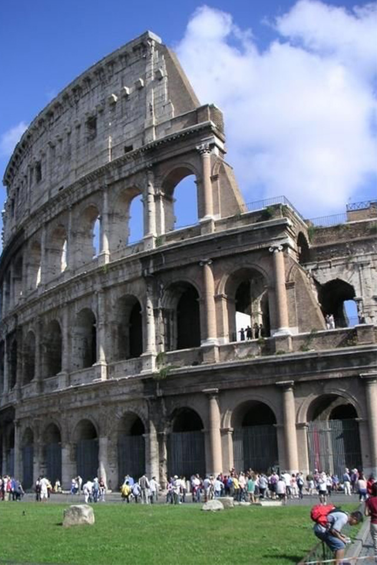
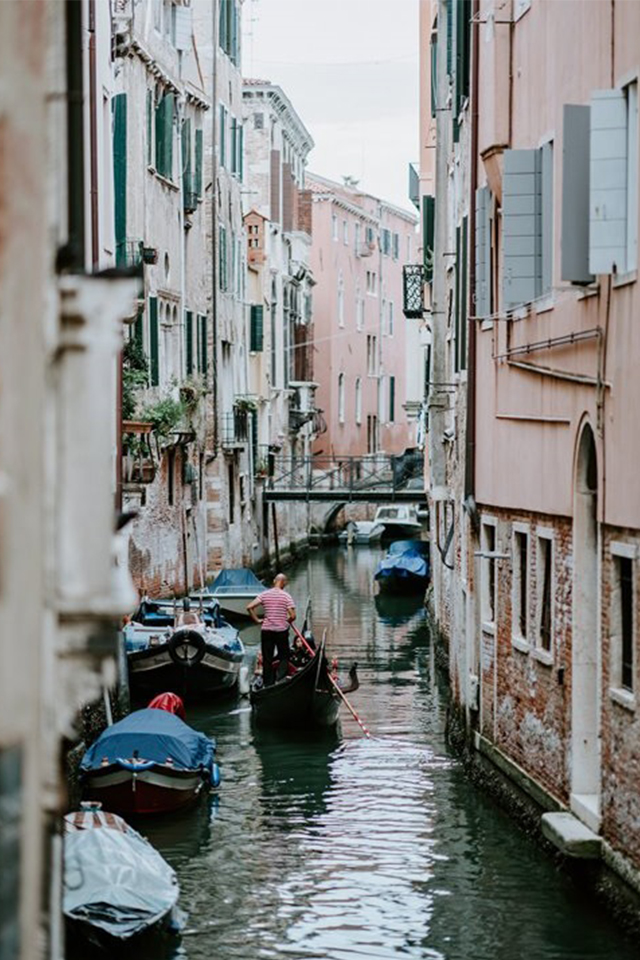
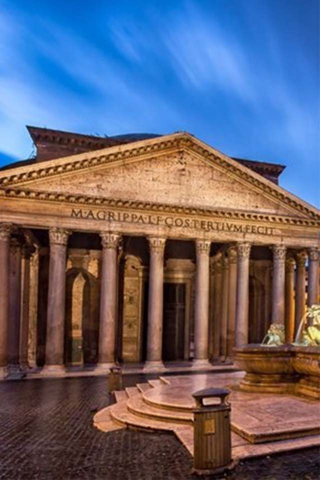

Ademas de ser la capital, es conocida como la “Ciudad Eterna” por la Historia que cada uno de sus recovecos encierra, pero en Roma también podrás disfrutar de atracciones de vanguardia como restaurantes de alta cocina y unas calles comerciales que solo se encuentran aquí.
Roma
Ademas de ser la capital, es conocida como la “Ciudad Eterna” por la Historia que cada uno de sus recovecos encierra, pero en Roma también podrás disfrutar de atracciones de vanguardia como restaurantes de alta cocina y unas calles comerciales que solo se encuentran aquí.
Milan
Es una provincia destacada por sus sitios turísticos tanto religiosos como arquitectónicos y más destacado aún se le llama la ciudad de la moda pues en Milán se llevan a cabo diferentes eventos relacionados con la moda.

Conocida como la ciudad de los canales, es una de las ciudades más románticas del mundo y uno de los lugares que visitar en Italia sea la época del año que sea.
Venecia
Conocida como la ciudad de los canales, es una de las ciudades más románticas del mundo y uno de los lugares que visitar en Italia sea la época del año que sea.
Florencia
Esta ciudad es uno de los mejores lugares que ver en Italia gracias a su incomparable riqueza cultural.

Pisa
Recorrer la región italiana de la Toscana es una de las mejores cosas que hacer en Italia y una de las paradas más importantes es la ciudad de Pisa. Además de su famosísima torre inclinada, en Pisa hay mucho más por hacer.
Cinque Terre
Es un conjunto de pueblos situados en acantilados y llenos de coloridas casas. Se pueden recorrer pueblos como: Vernazza, Corniglia, Monterosso al Mare, Riomaggiore y Manarola y podes hacer algunos de los senderos que unen estas poblaciones y asi obtendrás las mejores vistas hacia el mar Adriático.
Siena
El Centro histórico de esta ciudad medieval fue declarado Patrimonio de la Humanidad por la UNESCO en 1995. Aqui podras visitar la Piazza del Campo, una de las plazas más espectaculares de Italia y donde se celebra cada año el Palio de Siena, una de las competiciones de caballos más famosas del mundo.

Es un antiguo templo romano —en la actualidad una iglesia—, situado en la ciudad de Roma, en el lugar de un anterior templo encargado por Marco Agripa durante el gobierno de Augusto.
Panteon de Agripa
Es un antiguo templo romano —en la actualidad una iglesia—, situado en la ciudad de Roma, en el lugar de un anterior templo encargado por Marco Agripa durante el gobierno de Augusto.
Capilla Sixtina
La Capilla Sixtina es una capilla del Palacio Apostólico de la Ciudad del Vaticano, la residencia oficial del papa. Se trata de la estancia más conocida del conjunto palaciego. Originalmente servía como capilla de la fortaleza vaticana.

Verona
Es uno de los destinos turísticos de Italia debido a que es de las ciudades románticas, con bellas construcciones artísticas y lindos espacios para pasear y conocer.